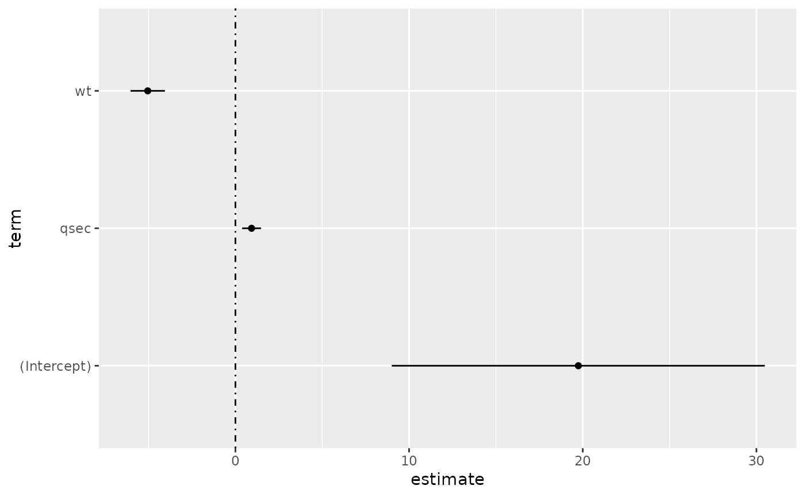
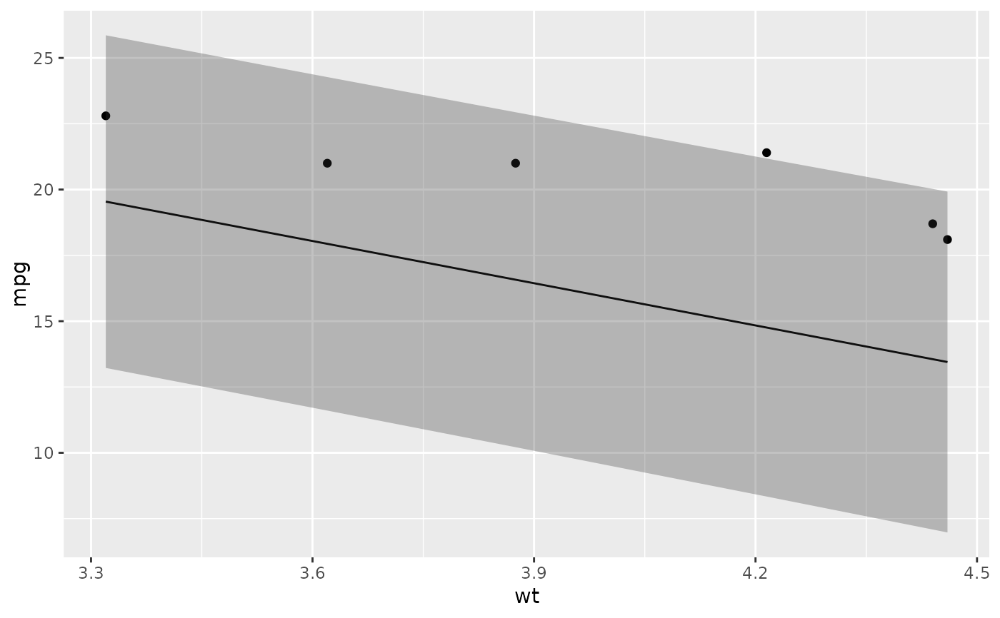
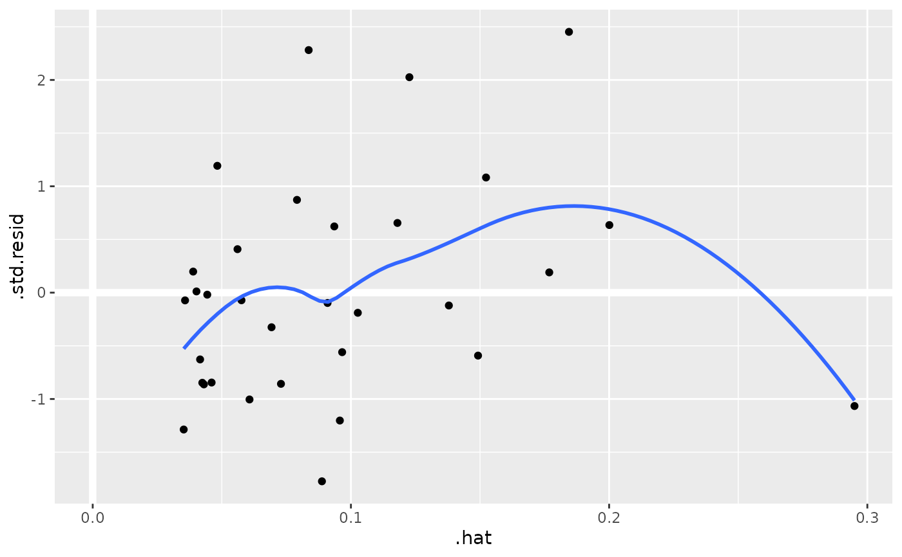
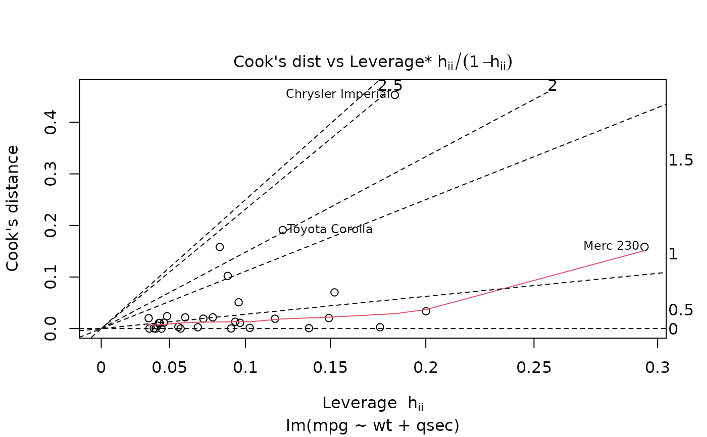
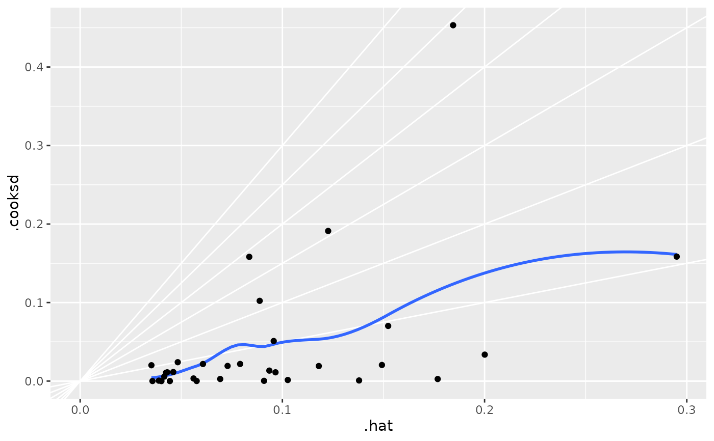

Tidy summarizes information about the components of a model. A model component might be a single term in a regression, a single hypothesis, a cluster, or a class. Exactly what tidy considers to be a model component varies across models but is usually self-evident. If a model has several distinct types of components, you will need to specify which components to return.
Usage
# S3 method for lm
tidy(x, conf.int = FALSE, conf.level = 0.95, exponentiate = FALSE, ...)Arguments
- x
An
lmobject created bystats::lm().- conf.int
Logical indicating whether or not to include a confidence interval in the tidied output. Defaults to
FALSE.- conf.level
The confidence level to use for the confidence interval if
conf.int = TRUE. Must be strictly greater than 0 and less than 1. Defaults to 0.95, which corresponds to a 95 percent confidence interval.- exponentiate
Logical indicating whether or not to exponentiate the the coefficient estimates. This is typical for logistic and multinomial regressions, but a bad idea if there is no log or logit link. Defaults to
FALSE.- ...
Additional arguments. Not used. Needed to match generic signature only. Cautionary note: Misspelled arguments will be absorbed in
..., where they will be ignored. If the misspelled argument has a default value, the default value will be used. For example, if you passconf.lvel = 0.9, all computation will proceed usingconf.level = 0.95. Two exceptions here are:
Details
If the linear model is an mlm object (multiple linear model),
there is an additional column response. See tidy.mlm().
See also
Other lm tidiers:
augment.glm(),
augment.lm(),
glance.glm(),
glance.lm(),
glance.summary.lm(),
glance.svyglm(),
tidy.glm(),
tidy.lm.beta(),
tidy.mlm(),
tidy.summary.lm()
Value
A tibble::tibble() with columns:
- conf.high
Upper bound on the confidence interval for the estimate.
- conf.low
Lower bound on the confidence interval for the estimate.
- estimate
The estimated value of the regression term.
- p.value
The two-sided p-value associated with the observed statistic.
- statistic
The value of a T-statistic to use in a hypothesis that the regression term is non-zero.
- std.error
The standard error of the regression term.
- term
The name of the regression term.
Examples
library(ggplot2)
library(dplyr)
mod <- lm(mpg ~ wt + qsec, data = mtcars)
tidy(mod)
#> # A tibble: 3 × 5
#> term estimate std.error statistic p.value
#> <chr> <dbl> <dbl> <dbl> <dbl>
#> 1 (Intercept) 19.7 5.25 3.76 7.65e- 4
#> 2 wt -5.05 0.484 -10.4 2.52e-11
#> 3 qsec 0.929 0.265 3.51 1.50e- 3
glance(mod)
#> # A tibble: 1 × 12
#> r.squared adj.r.squared sigma statistic p.value df logLik AIC
#> <dbl> <dbl> <dbl> <dbl> <dbl> <dbl> <dbl> <dbl>
#> 1 0.826 0.814 2.60 69.0 9.39e-12 2 -74.4 157.
#> # … with 4 more variables: BIC <dbl>, deviance <dbl>, df.residual <int>,
#> # nobs <int>
# coefficient plot
d <- tidy(mod, conf.int = TRUE)
ggplot(d, aes(estimate, term, xmin = conf.low, xmax = conf.high, height = 0)) +
geom_point() +
geom_vline(xintercept = 0, lty = 4) +
geom_errorbarh()

# aside: There are tidy() and glance() methods for lm.summary objects too.
# this can be useful when you want to conserve memory by converting large lm
# objects into their leaner summary.lm equivalents.
s <- summary(mod)
tidy(s, conf.int = TRUE)
#> # A tibble: 3 × 7
#> term estimate std.error statistic p.value conf.low conf.high
#> <chr> <dbl> <dbl> <dbl> <dbl> <dbl> <dbl>
#> 1 (Intercept) 19.7 5.25 3.76 7.65e- 4 9.00 30.5
#> 2 wt -5.05 0.484 -10.4 2.52e-11 -6.04 -4.06
#> 3 qsec 0.929 0.265 3.51 1.50e- 3 0.387 1.47
glance(s)
#> # A tibble: 1 × 8
#> r.squared adj.r.squared sigma statistic p.value df df.residual nobs
#> <dbl> <dbl> <dbl> <dbl> <dbl> <dbl> <int> <dbl>
#> 1 0.826 0.814 2.60 69.0 9.39e-12 2 29 32
augment(mod)
#> # A tibble: 32 × 10
#> .rownames mpg wt qsec .fitted .resid .hat .sigma .cooksd
#> <chr> <dbl> <dbl> <dbl> <dbl> <dbl> <dbl> <dbl> <dbl>
#> 1 Mazda RX4 21 2.62 16.5 21.8 -0.815 0.0693 2.64 2.63e-3
#> 2 Mazda RX4 Wag 21 2.88 17.0 21.0 -0.0482 0.0444 2.64 5.59e-6
#> 3 Datsun 710 22.8 2.32 18.6 25.3 -2.53 0.0607 2.60 2.17e-2
#> 4 Hornet 4 Drive 21.4 3.22 19.4 21.6 -0.181 0.0576 2.64 1.05e-4
#> 5 Hornet Sportab… 18.7 3.44 17.0 18.2 0.504 0.0389 2.64 5.29e-4
#> 6 Valiant 18.1 3.46 20.2 21.1 -2.97 0.0957 2.58 5.10e-2
#> 7 Duster 360 14.3 3.57 15.8 16.4 -2.14 0.0729 2.61 1.93e-2
#> 8 Merc 240D 24.4 3.19 20 22.2 2.17 0.0791 2.61 2.18e-2
#> 9 Merc 230 22.8 3.15 22.9 25.1 -2.32 0.295 2.59 1.59e-1
#> 10 Merc 280 19.2 3.44 18.3 19.4 -0.185 0.0358 2.64 6.55e-5
#> # … with 22 more rows, and 1 more variable: .std.resid <dbl>
augment(mod, mtcars, interval = "confidence")
#> # A tibble: 32 × 20
#> .rownames mpg cyl disp hp drat wt qsec vs am gear
#> <chr> <dbl> <dbl> <dbl> <dbl> <dbl> <dbl> <dbl> <dbl> <dbl> <dbl>
#> 1 Mazda RX4 21 6 160 110 3.9 2.62 16.5 0 1 4
#> 2 Mazda RX4 … 21 6 160 110 3.9 2.88 17.0 0 1 4
#> 3 Datsun 710 22.8 4 108 93 3.85 2.32 18.6 1 1 4
#> 4 Hornet 4 D… 21.4 6 258 110 3.08 3.22 19.4 1 0 3
#> 5 Hornet Spo… 18.7 8 360 175 3.15 3.44 17.0 0 0 3
#> 6 Valiant 18.1 6 225 105 2.76 3.46 20.2 1 0 3
#> 7 Duster 360 14.3 8 360 245 3.21 3.57 15.8 0 0 3
#> 8 Merc 240D 24.4 4 147. 62 3.69 3.19 20 1 0 4
#> 9 Merc 230 22.8 4 141. 95 3.92 3.15 22.9 1 0 4
#> 10 Merc 280 19.2 6 168. 123 3.92 3.44 18.3 1 0 4
#> # … with 22 more rows, and 9 more variables: carb <dbl>, .fitted <dbl>,
#> # .lower <dbl>, .upper <dbl>, .resid <dbl>, .hat <dbl>, .sigma <dbl>,
#> # .cooksd <dbl>, .std.resid <dbl>
# predict on new data
newdata <- mtcars %>%
head(6) %>%
mutate(wt = wt + 1)
augment(mod, newdata = newdata)
#> # A tibble: 6 × 14
#> .rownames mpg cyl disp hp drat wt qsec vs am gear
#> <chr> <dbl> <dbl> <dbl> <dbl> <dbl> <dbl> <dbl> <dbl> <dbl> <dbl>
#> 1 Mazda RX4 21 6 160 110 3.9 3.62 16.5 0 1 4
#> 2 Mazda RX4 W… 21 6 160 110 3.9 3.88 17.0 0 1 4
#> 3 Datsun 710 22.8 4 108 93 3.85 3.32 18.6 1 1 4
#> 4 Hornet 4 Dr… 21.4 6 258 110 3.08 4.22 19.4 1 0 3
#> 5 Hornet Spor… 18.7 8 360 175 3.15 4.44 17.0 0 0 3
#> 6 Valiant 18.1 6 225 105 2.76 4.46 20.2 1 0 3
#> # … with 3 more variables: carb <dbl>, .fitted <dbl>, .resid <dbl>
# ggplot2 example where we also construct 95% prediction interval
# simpler bivariate model since we're plotting in 2D
mod2 <- lm(mpg ~ wt, data = mtcars)
au <- augment(mod2, newdata = newdata, interval = "prediction")
ggplot(au, aes(wt, mpg)) +
geom_point() +
geom_line(aes(y = .fitted)) +
geom_ribbon(aes(ymin = .lower, ymax = .upper), col = NA, alpha = 0.3)

# predict on new data without outcome variable. Output does not include .resid
newdata <- newdata %>%
select(-mpg)
augment(mod, newdata = newdata)
#> Warning: 'newdata' had 6 rows but variables found have 234 rows
#> # A tibble: 6 × 12
#> .rownames cyl disp hp drat wt qsec vs am gear carb
#> <chr> <dbl> <dbl> <dbl> <dbl> <dbl> <dbl> <dbl> <dbl> <dbl> <dbl>
#> 1 Mazda RX4 6 160 110 3.9 3.62 16.5 0 1 4 4
#> 2 Mazda RX4 W… 6 160 110 3.9 3.88 17.0 0 1 4 4
#> 3 Datsun 710 4 108 93 3.85 3.32 18.6 1 1 4 1
#> 4 Hornet 4 Dr… 6 258 110 3.08 4.22 19.4 1 0 3 1
#> 5 Hornet Spor… 8 360 175 3.15 4.44 17.0 0 0 3 2
#> 6 Valiant 6 225 105 2.76 4.46 20.2 1 0 3 1
#> # … with 1 more variable: .fitted <dbl>
au <- augment(mod, data = mtcars)
ggplot(au, aes(.hat, .std.resid)) +
geom_vline(size = 2, colour = "white", xintercept = 0) +
geom_hline(size = 2, colour = "white", yintercept = 0) +
geom_point() +
geom_smooth(se = FALSE)
#> `geom_smooth()` using method = 'loess' and formula 'y ~ x'

plot(mod, which = 6)

ggplot(au, aes(.hat, .cooksd)) +
geom_vline(xintercept = 0, colour = NA) +
geom_abline(slope = seq(0, 3, by = 0.5), colour = "white") +
geom_smooth(se = FALSE) +
geom_point()
#> `geom_smooth()` using method = 'loess' and formula 'y ~ x'

# column-wise models
a <- matrix(rnorm(20), nrow = 10)
b <- a + rnorm(length(a))
result <- lm(b ~ a)
tidy(result)
#> # A tibble: 6 × 6
#> response term estimate std.error statistic p.value
#> <chr> <chr> <dbl> <dbl> <dbl> <dbl>
#> 1 Y1 (Intercept) 0.120 0.460 0.260 0.802
#> 2 Y1 a1 1.40 0.400 3.51 0.00987
#> 3 Y1 a2 0.00979 0.337 0.0291 0.978
#> 4 Y2 (Intercept) -0.300 0.320 -0.940 0.379
#> 5 Y2 a1 0.160 0.278 0.578 0.582
#> 6 Y2 a2 0.913 0.234 3.90 0.00589